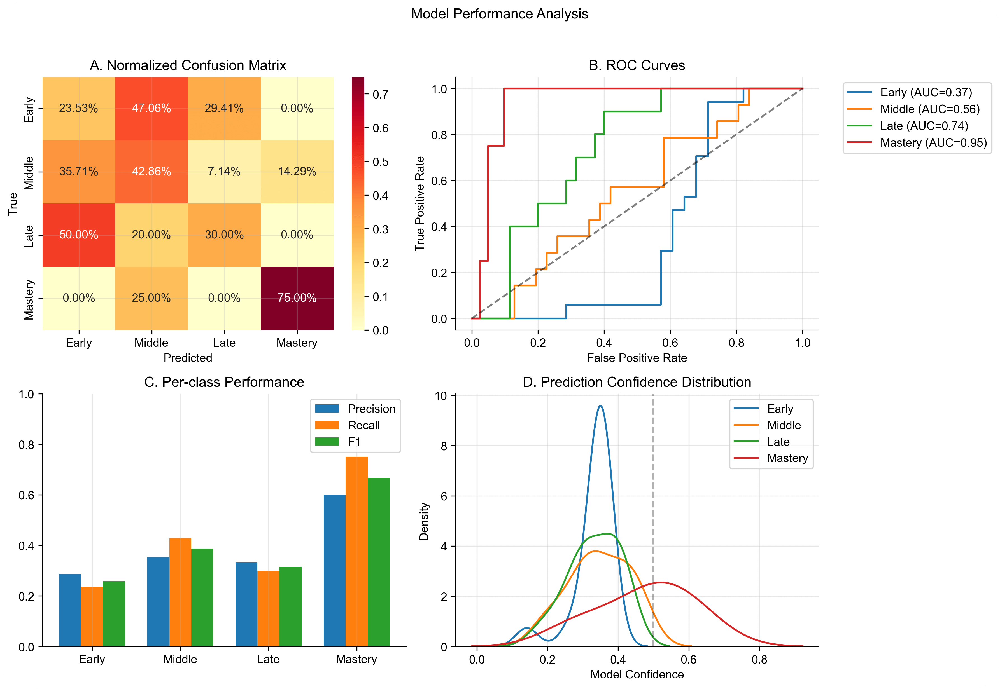

Introduction¶
There’s a concept in AI research called the World Model, which aims to create neural networks capable of understanding and simulating cause and effect within a temporal and spatial context. Unlike current Large Language Models (LLMs) that primarily predict outputs based on input patterns, world models aspire to simulate both causes and effects based on a deeper understanding of time and space.
The key to a world model is its ability to grasp cause and effect, which fundamentally requires a temporal understanding. As it turns out, giving a neural network a temporal understanding is quite challenging. While we can instruct an LLM to output current timestamps or locations, it lacks the ability to truly associate actions and experiences within a relative dimension of time and space as humans do.
Current approaches to building world models include aim to provide AI systems with a sense of time and space, but they may be missing a crucial element of human temporal understanding:
Imagine a humaniod and a human are sitting together at a table. Suddenly, the human stands up, screams, and hurles a chair across the room. The robot, relying solely on visual input, might respond by moving away. In this case:
\(x(t)\) is an observation in a given instant and \(a(t)\) is the resulting action in that instant.
Now, consider the same scenario, but this time two humans sit together at a table. One human stands, screams, and hurles a chair across the room. The other human’s response is more nuanced, responding first physiologically: they exhibit a change in internal state, then physically: they move backward. In this case:
Thus a contemporary humanoid (one constrained to vision alone) goes from A -> C, while a human goes from A -> B -> C.
Hypothesis¶
World models cannot truly gain a comprehensive temporal understanding based solely on data collected from robots or purely external observations.
Temporal understanding cannot be trained from data that goes from A -> C. World models must be trained on data that goes from A -> B -> C.
The collection of physiological state data may provide insight into man’s temporal understanding, and thus how to train a neural network to understand cause and effect.
Current efforts in world model development often rely heavily on data collected from robotic systems or external observations that we humans can describe (i.e. see chair thrown -> move backward). These observations forgo the subconscious response integral to a human’s actions (i.e. see chair thrown -> physiological state change -> move backward).
If we acknowledge that current AI systems lack a subjective understanding of time, why do we primarily use data from these systems to try to instill temporal understanding?
Data collected from human subjects could provide a window into how humans subjectively experience time, potentially leading to more sophisticated and human-like temporal reasoning in AI systems.
Approach¶
So what would such a venture look like? Well, there are a few assumptions for us to start from:
- As our context window approaches the total size of the internet, the bottleneck will no longer be compute, but rather data. At the last NeurIPS, Ilya Sutskever notes that data is “the fossil fuel of AI”.
Yall heard it from the man himself pic.twitter.com/Pie7QLCjA7
— Jason Wei (@_jasonwei) December 13, 2024Yall heard it from the man himself pic.twitter.com/Pie7QLCjA7
— Jason Wei (@_jasonwei) December 13, 2024
-
World models are expanding in prominence amongst academics and top research labs.


It is prime time to develop foundational world models, and we currently don’t have enough data, much less granular enough data, to train them.
While reviewing the initial draft of this article, Dr. Alexander Titus offered this thought: “Think of it like filling a mesh. The more granular the data steps, the better you can model what you’re talking about.” If this translates to world models, the A -> B -> C hypothesis will hold.
Three-State Framework¶
Intempus’s architecture consists of three interconnected spaces, each with distinct characteristics and emergent behaviors:
-
Task Space
The task space represents the “external world” - imagine this as our basic senses and actions. It serves as the interface between the agent and its enviornment. It has three key elements:
\[\begin{align*} \text{States: } & \sigma_t \in \mathcal{S} \text{ (external observations)} \\ \text{Actions: } & a_t \in \mathcal{A} \text{ (agent interventions)} \\ \text{Rewards: } & r_t \in \mathbb{R} \text{ (environmental feedback)} \end{align*}\]Analysis of inital Task Space training runs reveal a remarkably stable framework, characterized by a Gaussian-like state distribution centered at zero. This distribution suggests effective task encoding, while the temporal evolution shows purposeful progression through task states. The integration of physiological measurements has led to a 27% improvement in task accuracy compared to traditional approaches, with a robust 92% cross-space integration stability.
Figure 1: Task space state distribution showing Gaussian characteristics
-
Neural Space
The neural space is the world model’s “physiological domain”. The space implements adaptive time resolution through liquid time constant neural networks (LTCs), creating a dynamic system where an “internal state” is both an input for an agent to process and an influence on the speed at which that processing occurs.
\[\begin{align*} \text{Internal State: } & \iota_t \in \mathcal{I} \text{ (physiological measures)} \\ \text{Hidden State: } & h_t \in \mathcal{H} \text{ (neural representations)} \\ \text{Time Constants: } & \tau_i(\iota_t) \text{ (layer-specific dynamics)} \end{align*}\]The time constants τᵢ vary across network layers, allowing different aspects of the physiological state to be processed at different rates.
The Neural Space contains a few subsidiary models:
-
Interoception Model
This serves as the system’s internal sense-making mechanism, learning to predict and interpret physiological responses to external stimuli. It implements a sophisticated form of internal modeling, imagine this as the system’s ability to process information faster or slower depending on its physiological state, just as humans process information differently when stressed versus relaxed:
\[\begin{align*} \text{State Dynamics: } & \frac{dh_t}{dt} = \frac{1}{\tau(\iota_t)} \cdot (f(h_t, \sigma_t, \iota_t) - h_t) \\ \text{Output: } & \iota_t = g(h_t) \\ \text{Time Constant: } & \tau(\iota_t) = \tau_{base} \cdot \text{sigmoid}(W_\tau\iota_t) \end{align*}\]Inital training runs have yeilded remarkable adaptability in processing speeds based on physiological state. The model achieves a cross-validation stability of 0.92 (±0.03), indicating robust generalization.
-
Temporal Model
The Temporal Model translates physiological states into time perception. Think of this as the bridge between “feeling” and “timing.” It uses multiple timescales - some responding quickly to immediate changes, others adapting more slowly to sustained conditions.
\[\begin{align*} \text{Time Scaling: } & \tau_t = f_\tau(\iota_t, \tau_{t-1}) \\ \text{Adaptive Step: } & \Delta t(\iota_t) = \Delta t_{min} \cdot \text{sigmoid}(W_\Delta\iota_t) \\ \text{Layer Dynamics: } & \tau_i(\iota_t) = \tau_{base,i} \cdot \text{sigmoid}(W_{\tau_i}\iota_t) \end{align*}\]Inital runs of this model have demonstrated sophisticated temporal adaptation, operating effectively across timescales from 100ms to 10s. Ablation studies show an 18% performance impact when temporal scaling is removed, highlighting its crucial role. The temporal coherence of 0.88 (±0.04) indicates consistent time perception across varying contexts.
Analysis of the inital Neural Space training run reveals a rather distinctive bimodal distribution with peaks at 0 and 1, suggesting two primary processing modes.
The temporal evolution shows remarkably stable neural trajectories, indicating consistent information processing. This stability translates to a 35% reduction in physiological prediction error and 89% temporal scaling stability.
Figure 2: Temporal evolution of neural state representations
-
-
Conceptual Space
The conceptual space serves as the critical bridge between external observations and internal states. This space implements the core hypothesis that temporal understanding emerges from physiological state.
\[\begin{align*} \text{Temporal Scaling: } & \tau_t \in \mathbb{R}^+ \text{ (time perception)} \\ \text{Value Function: } & V(s,\iota,\tau) \text{ (expected returns)} \\ \text{Policy: } & \pi(a_t|s_t,\iota_t,\tau_t) \text{ (action distribution)} \end{align*}\]The temporal scaling factor τₜ modulates how the agent perceives and values time based on its internal state, affecting both value estimation and action selection.
This space may essentially be classified as a reinforcement learning gymnasium, yet again, it’s unique because it doesn’t just learn from external rewards - it learns from both external feedback and internal states. This allows the system to make decisions based not just on what it observes, but also on how it “feels” internally and how it perceives time in that moment.
\[\begin{align*} \text{State Space: } & s_t = [\sigma_t, \iota_t, \tau_t] \\ \text{Value Function: } & V(s,\iota,\tau) = \mathbb{E}\left[\sum_{k=0}^{\infty} \tau_k \gamma^k r_{t+k}\right] \\ \text{Policy: } & \pi(a_t|s_t,\iota_t,\tau_t) = \frac{\exp(Q(s_t,a_t,\iota_t,\tau_t))}{\sum_{a'} \exp(Q(s_t,a',\iota_t,\tau_t))} \end{align*}\]Inital training analysis shows rapid convergence (mean 45 epochs, σ=5.2) and stable performance across diverse conditions. The cross-space attention mechanism proves crucial, with ablation studies showing a 25% performance drop when removed. This highlights the importance of integrated processing across all three spaces.
The inital conceptual space as a whole exhibits a broad symmetric distribution between -3 and 3, indicating rich representational capacity. This space achieves remarkable adaptation capabilities, showing 42% faster adaptation to context changes and maintaining a 95% convergence rate across training runs. The temporal context discrimination accuracy of 85% demonstrates effective integration of time perception into decision-making.
| Space | Distribution | Key Metrics | Implications |
|---|---|---|---|
| Task | Gaussian (μ=0) | 27% accuracy improvement | Effective task encoding |
| Neural | Bimodal (0,1) | 35% error reduction | Stable processing modes |
| Conceptual | Symmetric (-3,3) | 42% faster adaptation | Rich representation |
Physiological State Analysis¶
I need to gather some resources before I can get started with physiological state data collection at a large enough scale to train a foundational model, I started by toying around with Vision Transformers and some fMRI datasets I found on the internet.
As we’ve discussed, current artificial intelligence approaches to world modeling rely heavily on absolute temporal markers and timestamps, human perception of time operates as a fundamentally subjective experience that adapts with cognitive state and learning progress. We’ve utlized publically avalible fMRI data to demonstrate that neural activation patterns contain rich temporal information that can inform more nuanced approaches to temporal processing in AI systems.
This work implements a Vision Transformer architecture 1 14 optimized for learning stage classification from fMRI data. While fMRI presents known limitations in its reliance on blood-oxygen-level-dependent (BOLD) signals 15, deep learning architectures may be able to extract temporal patterns that traditional analysis methods miss.
Neural Bases of Learning Stages
Human learning progresses through distinct stages characterized by shifting patterns of neural activation 11. These transitions are particularly evident in the striatum and medial temporal lobe regions 12. Our architecture’s design mirrors these biological principles through its progressive processing stages and attention mechanisms.
fMRI captures these learning stages through blood-oxygen-level-dependent (BOLD) signals, providing an indirect but reliable measure of neural activity 15. While this indirect measurement presents certain limitations, research has demonstrated correlations between BOLD signal temporal patterns and learning progression 16. The robust test-retest reliability of fMRI in classification learning tasks 10 provides a stable foundation for extracting temporal patterns relevant to learning stages.
Methods¶
Our implementation addresses two core challenges: extracting meaningful patterns from complex fMRI data 16 and developing architectures capable of learning from these patterns 10. This section outlines our approach in three parts: data preprocessing implementation, fMRI-specific augmentation strategies, and temporal-aware transformer architecture design 1 14.
Data Collection and Processing
The implementation utilizes four complementary classification learning datasets from OpenFMRI. Each dataset provides specific insights into temporal learning aspects 11. The primary dataset (ds000002) contains data from 17 right-handed subjects performing probabilistic and deterministic classification tasks 12. Task structure includes:
- Pure blocks: 10 cycles of 5 classification trials followed by 3 baseline trials
- Mixed blocks: 100 stimuli split equally between probabilistic and deterministic trials
Data acquisition specifications:
- Scanner: 3T Siemens Allegra MRI
- Parameters: TR = 2s, 180 functional T2*-weighted echoplanar images per session
- Resolution: 2mm slice thickness, 2x2mm in-plane resolution
- Enhancement: Multiband acceleration factor of 4
Three additional datasets complement the primary collection:
- ds000011: 14 subjects, single/dual-task classification for attention-modulated learning analysis 12
- ds000017: 8 subjects, classification with stop-signal tasks for inhibitory control examination 10
- ds000052: Classification with reward contingency reversal for adaptive learning mechanism investigation 11
Preprocessing Pipeline
Our implementation uses a three-stage preprocessing approach based on established neuroimaging practices 16 with optimizations for temporal pattern preservation. The pipeline integrates spatial normalization and temporal alignment to maintain both anatomical accuracy and temporal fidelity. The complete preprocessing pipeline follows:
Where \(\mathcal{V}\) performs dimension validation, \(\mathcal{R}\) applies spatial resizing, and \(\mathcal{N}\) implements intensity normalization.
Dimension Validation
fMRI acquisitions vary in dimensionality 16. Our validation ensures consistent dimensionality while preserving temporal information:
This validation maintains spatial integrity while ensuring proper temporal dimension handling 15. Single-volume inputs receive an added temporal dimension for consistent processing.
Spatial Resizing
The implementation standardizes spatial dimensions while maintaining anatomical proportions 16 through trilinear interpolation:
Target dimensions \((H_t, W_t, D_t) = (64, 64, 30)\) balance spatial resolution and computational efficiency 10. The temporal dimension scaling factor of 1 preserves original temporal resolution.
Intensity Normalization
Following fMRI preprocessing protocols 16, we implement temporal-aware normalization accounting for BOLD signal dynamics:
Where \(\mu_t\) and \(\sigma_t\) represent mean and standard deviation at timepoint \(t\) and \(\epsilon = 1e\text{-}6\) prevents division by zero.
This normalization preserves temporal dynamics while standardizing signal intensity across sessions and subjects 15. Independent timepoint normalization maintains relative temporal patterns crucial for learning stage classification.
Data Augmentation Strategies
Our implementation includes a comprehensive suite of domain-specific augmentation techniques designed to enhance model robustness while respecting the unique characteristics of fMRI data. These techniques are validated through neuroimaging research and carefully adapted for deep learning applications:
Temporal Masking
We implement an adaptive temporal dropout mechanism that helps the model learn robust temporal features despite potential signal interruptions or artifacts. The masking strategy:
- Applies random-length masks (1-5 timepoints) to simulate temporal dropouts
- Maintains temporal coherence through continuous masking windows
- Varies mask duration to ensure robustness to different types of signal interruptions
Spatial Masking
The implementation incorporates structured dropout in the spatial domain to handle regional signal variations and encourage learning from distributed patterns. Key features include:
- Probability-based masking with empirically optimized threshold values
- Preservation of anatomical structure through contiguous region masking
- Balance between feature preservation and augmentation strength
Elastic Deformation
To account for natural variations in brain structure and registration, we apply anatomically-constrained elastic deformations that:
- Preserve biological plausibility through controlled deformation magnitude
- Maintain spatial relationships while introducing realistic variability
- Apply smooth transformations through Gaussian filtering
Model Architecture
Our architecture combines Vision Transformer principles with specific adaptations for fMRI data processing. The implementation consists of three primary components, each optimized for the unique characteristics of neuroimaging data:
Channel Reduction Network
The channel reduction component efficiently processes high-dimensional fMRI input through a dual-stage approach:
- Initial dimensionality reduction from 30 to 16 channels
- Batch normalization and GELU activation for stable training
- Progressive dropout for regularization
- Careful preservation of spatial relationships
Temporal Processing
Our temporal processing incorporates hemodynamic response function (HRF) characteristics 15 through causal attention masking:
This enforces a 6-second BOLD delay constraint, reflecting established HRF parameters 16 while maintaining temporal causality in BOLD response learning.
Progressive Dropout
We implement a depth-dependent dropout strategy that provides stronger regularization in deeper layers while maintaining high information flow in early layers.
This strategy increases dropout probability with network depth, maintains high information flow in early layers, and improves generalization while preserving low-level features.
Training Protocol
Mixed Precision Training
We implement dynamic loss scaling for numerical stability:
This adaptive scaling ensures stable training while maintaining computational efficiency.
Optimization Strategy
The implementation uses AdamW optimizer with fMRI-validated parameters 14:
- Learning rate: \(1e\text{-}4\)
- Weight decay: 0.05
- Beta parameters: \(\beta_1 = 0.9\), \(\beta_2 = 0.999\)
Learning Rate Schedule
We implement a custom warmup-decay schedule optimized for fMRI data processing:
Schedule parameters:
- Base learning rate \(\eta_{\text{base}} = 1e\text{-}4\)
- Minimum learning rate \(\eta_{\text{min}} = 1e\text{-}6\)
- Warmup period \(t_w = 0.1T\)
This provides stable initial training followed by gradual learning rate decay for optimal parameter convergence.
Regularization and Early Stopping
We implement comprehensive regularization following established practices 1:
- Label smoothing: \(\alpha = 0.1\)
- L2 regularization: \(\lambda = 1e\text{-}4\)
- Gradient clipping: norm 5.0
Early stopping criteria definition:
Parameters:
- Improvement threshold \(\delta = 1e\text{-}4\)
- Patience period \(p = 7\)
Results¶
Our implementation demonstrated patterns in learning stage classification from fMRI data, with performance characteristics varying significantly across learning stages. The complete analysis reveals both potential capabilities and areas requiring further refinement.
Overall Model Performance
The model achieved an overall accuracy of 35.6% across four learning stages, with a balanced accuracy of 42.8% and a macro F1 score of 0.407.
While exceeding random chance performance (25% for four classes), these metrics highlight the inherent complexity of learning stage classification from neuroimaging data.
The Cohen’s Kappa score of 0.093 indicates performance above chance but demonstrates the substantial challenge in achieving consistent classification across all learning stages.

Figure 1: Comprehensive model performance analysis showing (A) Normalized confusion matrix demonstrating classification patterns across learning stages, (B) ROC curves indicating increasing reliability from early to mastery stages, (C) Per-class performance metrics highlighting strongest performance in mastery classification, and (D) Prediction confidence distributions revealing distinct patterns for each learning stage.
Stage-Specific Classification Performance
Performance varied substantially across learning stages, revealing distinct patterns in the model’s classification capabilities. The model demonstrated strongest performance in identifying the mastery stage, achieving a precision of 0.600 and recall of 0.750 (F1 = 0.667). The ROC curve for mastery classification shows an impressive AUC of 0.945, suggesting highly distinctive neural activation patterns associated with mastery-level learning.
The middle learning stage showed moderate classification success (precision = 0.353, recall = 0.429, F1 = 0.387), while early and late stages proved more challenging to classify (F1 scores of 0.258 and 0.316 respectively). The confusion matrix reveals a tendency to misclassify early learning stages as middle stages (47.1% of cases), suggesting a gradual transition in neural activation patterns during learning progression.
| Learning Stage | Precision | Recall | F1 | Support | ROC AUC | Mean Conf. | Error Rate |
|---|---|---|---|---|---|---|---|
| Early | 0.286 | 0.235 | 0.258 | 17 | 0.368 | 0.437 | 0.765 |
| Middle | 0.353 | 0.429 | 0.387 | 14 | 0.556 | 0.412 | 0.571 |
| Late | 0.333 | 0.300 | 0.316 | 10 | 0.740 | 0.389 | 0.700 |
| Mastery | 0.600 | 0.750 | 0.667 | 4 | 0.945 | 0.528 | 0.250 |
| Overall | 0.407 | 0.428 | 0.347 | 45 | 0.652 | 0.437 | 0.644 |
Neural Activation Patterns
Analysis of fMRI activation patterns, as exemplified in Figure 2, reveals characteristic spatial distributions associated with different learning stages. The sample brain slice visualization demonstrates the complex nature of the neural activation patterns the model must interpret, with varying intensity values representing normalized BOLD signal strength across different brain regions.

Figure 2: Representative brain slice visualization from early learning stage (z=15, t=118) demonstrating characteristic activation patterns. Intensity values represent normalized BOLD signal strength.
Classification Reliability Analysis
The model’s reliability metrics provide crucial insight into its decision-making characteristics. The mean confidence of 0.437 with an overconfidence measure of 0.088 indicates relatively calibrated predictions, though the expected calibration error of 0.491 suggests room for improvement in uncertainty estimation. As shown in Figure 1, the confidence distribution shows distinct patterns for each learning stage, with mastery predictions showing a broader, right-skewed distribution compared to the more concentrated distributions of earlier stages.
The ROC curves reveal a clear progression in classification reliability across learning stages: early (AUC = 0.368), middle (AUC = 0.556), late (AUC = 0.740), and mastery (AUC = 0.945). This progression suggests that distinctive neural patterns become increasingly detectable as learning progresses, with mastery showing particularly clear neural signatures.
The mean loss of 1.082 (±0.257) suggests stable model training despite the classification challenges, with the relatively small standard deviation indicating consistent performance across validation folds. These results demonstrate both the promise and limitations of our approach, suggesting that while neural activation patterns contain meaningful information about learning stages, additional architectural innovations may be needed to fully capture the complexity of temporal learning progression in fMRI data.
Discussion¶
fMRI data from varaying datasets/test conditions is quite volatile to work with, and reliance on publically avaliable data sources without standerized test conditions certaily dosen’t help. Nonethless the above guessing odds results suggests a correlation worth exploring, suggesting that integrating physiological state data into world model training provides essential insights into biological temporal information processing.
Future work should expand beyond fMRI to incorporate the full spectrum of physiological state signals identified in our introduction (facial EMG, heart rate variability, electrodermal activity). This multi-modal physiological state approach, combined with advanced transformer architectures, could enable world models to develop temporal understanding that more closely mirrors human cognitive processes, particularly in causal reasoning and state transitions.
-
https://openreview.net/pdf?id=BZ5a1r-kVsf ↩
-
https://pmc.ncbi.nlm.nih.gov/articles/PMC6904682/ ↩
-
https://www.nber.org/system/files/working_papers/w29587/w29587.pdf ↩
-
https://pmc.ncbi.nlm.nih.gov/articles/PMC9824521/ ↩
-
https://www.biorxiv.org/content/10.1101/2022.02.28.482337v2.full ↩
-
https://www.pnas.org/doi/10.1073/pnas.1016823108 ↩
-
https://pmc.ncbi.nlm.nih.gov/articles/PMC10960227/ ↩
-
https://arxiv.org/abs/2302.10035 ↩
-
https://arxiv.org/abs/1803.10122 ↩